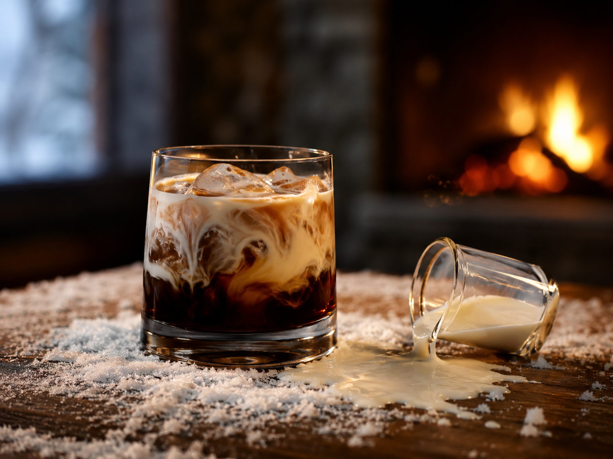

Alkoholstärke: 4/5
White Russian
Ein cremiger Cocktail aus Vodka, Kaffeelikör und Sahne. Kräftig, süßlich und besonders passend für kalte, verschneite Abende, um die Seele zu wärmen.
Zutaten
- 4 cl Vodka
- 2 cl Kaffeelikör
- 3 cl Sahne
- Eiswürfel
Zubereitung
- Ein Glas mit 2-3 Eiswürfeln füllen.
- Vodka und Kaffeelikör hinzugeben.
- Die Sahne vorsichtig darübergeben.
- Langsam umrühren und genießen.